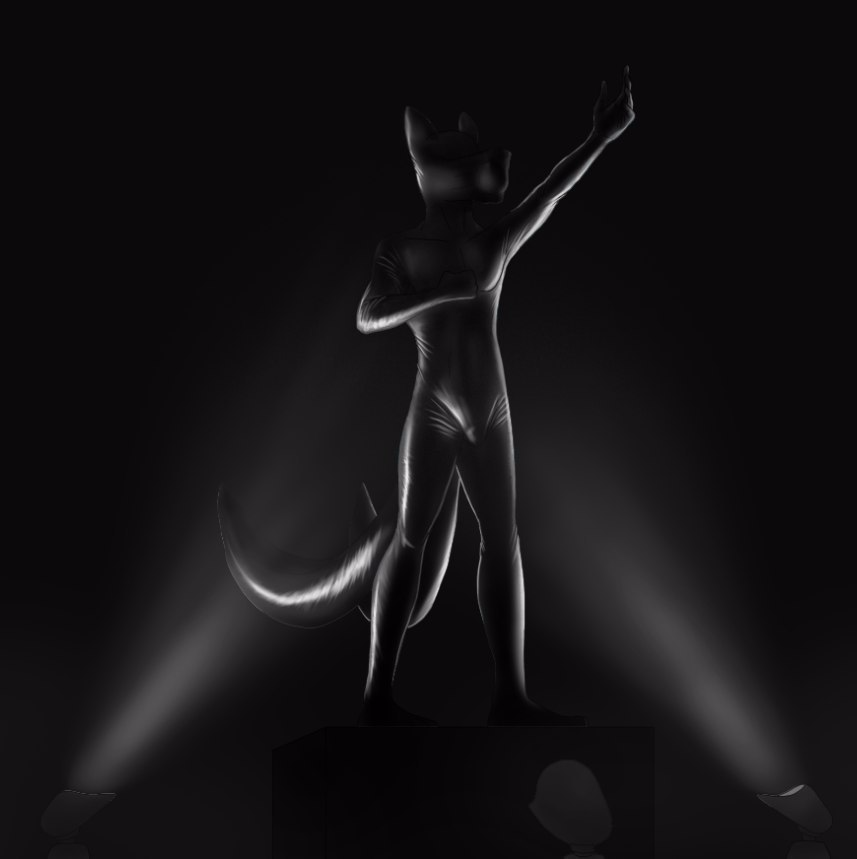

The Faux Statue
Written by TwistedSnakes
Commissioned by Sunookitsune
Illustrated by DragonTears

There was a clattering sound as the slot machine’s mechanical reels spun in their metal frames, whizzing its various icons and shapes in front of Sunoo, taunting the two-tailed white fox with the possibility of them aligning, giving him a first-class ticket to the land of the rich. The notes played and the lights flashed in his face in a flurry of sensory overload but the fox was only focused on the reels.
With a clunk as the mechanical wheels locked, the first reel came to a jarring halt: a cherry. What’s next? The other images rushed by in a blur of colours, reflecting off the lenses of his narrow spectacles in flashes of light.
Clunk. A cherry. One more.
The last wheel seemed to take forever to stop. Time seemed to slow for Sunoo as he watched the last wheel. Seven, cherry, bar, double bars, seven again.
Clunk. A lemon.
Damn it.
He should stop here. He was getting close to reaching the threshold of what he was willing to spend here at the casino. After he arrived at the Silver Serpent Casino and dumped his bags in his hotel room just above the casino, the first thing he looked for was the penny slot machines that he had grown to love in casinos worldwide. However, he was shocked to find the slot machines charging a hefty ten dollars per spin.
"Where are the penny slot machines?" he had asked another patron, a tiger shark, who was walking by. The patron had guffawed loudly and a few annoyed heads turned to him, his expression only turning serious when he realized the fox was serious.
"Listen, kid," the shark had put a heavy and muscular palm on the fox’s shoulder. "You’re at the Silver Serpent. We don’t do ‘pennies’ here. Go big or go home, boy."
And he did contemplate going home right there and then. But he was here on a holiday and his high-paying job had given him a ton of disposable income, so why not? Just a few spins and then he’d spend the time checking out the other games, spectating only of course.
Until he won five thousand dollars after his third spin with three bars in a row. Since then, the next five hours found the fox seated over the same slot machine, bent over in intent concentration as he pulled the handle down and sending the reels spinning, driven by the addictive feeling of winning. Or at least, the possibility of winning. If three single bars gave him so much, how much more would the jackpot bring him?
But each win had only pushed him to play even more to the point that he was eighteen thousand dollars poorer than when he had first stepped in, dangerously close to the twenty thousand limit he had set in his mind not to cross. Best to stop while he was on a losing streak before another winning spin would push him to spend a few thousand more.
Sunoo got off the round leather stool and stumbled as his legs got a feel of the ground again. Where to next? He ventured deeper into the casino, following a corridor which opened up to an expansive circular Egyptian-themed lobby. Palm trees sat in golden pots of earth beside limestone entrances that led off to elaborate hallways, posh restaurants, and bustling game rooms.
The outskirts of the room were lined with effigies of the numerous Egyptian deities, from Anubis to Horus, from Hathor to Sekhmet. An inner circle of statues represented the eight greater gods in their natural elements. A statue of Tefnut was calling forth a shower of rain depicted by a curtain of crystal raindrops suspended from the ceiling, and Shu the god of wind had his arms outstretched as gusts of air swirling around his sculpted body. The rest of them were in poses as they shaped their respective elements around them.
In the middle of the circle, however, was a statue that looked very different from the others. Rather than the clean marble that made up the effigies of the other gods, this one was encased in gold except for where the weather-worn metal revealed its body of black onyx gleaming beneath. Gold leaves and precious stones of jasper, carnelian and turquoise were inlaid in the statue's headdress, necklace and kilt. A sceptre in his hands was topped with a huge emerald crystal.
The statue's face was that of the sun-god Ra, the god of all Egyptian deities. Standing on a plinth, he towered over the other effigies, a beam of hard, orange light shining from below him as he loomed over the patrons of the Silver Serpent as they went on their way, most of them slowing down in awe of the dim and imposing room. The white fox was among them, admiring the decor as he approached the statue of Ra in the middle.
A plague on the plinth informed him that the statue was estimated to be crafted in 1300 BC, having been recovered from a recently-discovered shrine on the outskirts of the ancient temple of Karnak. The valuable artefact was probably meant to be housed in a museum, but knowing the extravagance of the Silver Serpent, they would have bribed their way to robbing history of priceless relics for the purpose of adorning their ornate hallways.
Sunoo snorted. He didn't quite approve of their practices but he wasn't the one with billions of dollars to spare. Suddenly, there was the sound of squealing as two excited children, a mouse boy and a rabbit girl came running through the lobby, weaving between the statues in a game of catch.
"Haha, you can’t catch me!" exclaimed the girl.
"Nuh-uh, just wait and see!" the boy yelled back.
The girl rushed past Sunoo in screams of laughter and he glared in annoyance. The boy was hot on her heels. With his hands outstretched, he shoved the fox aside.
Time seemed to slow down as Sunoo fell over. He flailed his arms trying to keep his balance and his hands hit something hard before coming to rest on the plinth. There was a sound of scraping stone as the hard object that was the left foot of Ra slipped off the pedestal.
The statue of the god tipped and fell over and the fox's heart lurched along with it. With a sickening smash, the statue hit the ground and shattered, sending bits of gold-plated onyx flying all about the room. The effigies of Nephthys and other lesser deities laid smashed under the black shards that used to be Ra's chest.
Sunoo scrambled to his feet, unable to believe the wreckage in front of him. He stared at the fragments in shock, his mouth open in bewilderment. People were staring at him but Sunoo did not notice. The world seemed to flash by and he only snapped out of it when a strong hand pressed on his shoulder.
"Come with us, sir," the owner of the hand, a rhino dressed in a security guard uniform, instructed.
"B-but it wasn't my fault. There were these two kids-" he looked around him but the boy and girl had long run off into another part of the casino.
"Don't make this difficult for either of us," the rhino grunted. Reluctantly, Sunoo nodded and followed the guard away.
"How am I going to restore the Egyptian exhibit," a blue-furred and horned tern sat on the leather chair behind a modern desk, furrowing his brows and massaging his temples with his clawed fingers. A nameplate that read "Javek" in gold letters sat on the table in front of him. A monitor, keyboard, and mouse sat on the left side of the table.
The silence hung heavy between them and Sunoo fiddled his fingers. Reducing a historical artefact into a pile of broken stone wasn't something he knew how to fix
"Maybe we could-" Sunoo began.
"Shut it," Javek waved his free hand as if to brush off the fox's words. "I wasn't talking to you."
A few awkward minutes passed with the tern deep in thought and the fox shifting uncomfortably in his mesh chair. Javek finally sat up straight in his chair and glared at Sunoo.
"You're going to replace the display," he waved a clawed finger in the air.
"B-but I don't have that kind of money for-"
"Shut it," he repeated, rolling his eyes with a sigh. He grabbed the mouse with his hand and scrubbed it across the table and the monitor turned on, its glare reflecting off the tern's striped fur. Tapping sounds filled the room for a few minutes as Javek typed on his mechanical keyboard with Sunoo watching in silence. With a final tap on his enter key, the printer behind Javek beeped and came to life, ejecting out a sheet of printed paper. He turned and grabbed it roughly, giving it a cursory glance before pressing a button on the table.
The rhino from before entered from the door behind Sunoo and approached the table, awaiting his instructions. The tern handed the sheet of paper to the rhino who examined it sceptically. "He'll replace the statue," Javek waved his hand and the rhino nodded, turning to the apprehensive fox.
"Follow me," he grunted at Sunoo and the fox hastily got up to follow, not wanting to cause any more trouble. He was led down a corridor to a glowing, rounded rectangle in the wall. The rhino stood in front of the rectangle and a beam of light shone around him. "Personnel Aneoln Rizu detected. Access granted," a female robotic declared as the wall within the rectangle faded away. Without hesitation, Aneoln stepped into the room.
The room within the newly-revealed doorway was illuminated by lights as they flickered on. Sunoo's eyes rested on a large glass cylinder that stood in the middle of the room, looking like a shower cubicle or an organism storage chamber Sunoo remembered from sci-fi movies. The room wasn't particularly spacious either, with enough space for about three people to stand side by side between the glass chamber to its white walls.
Sunoo raised his eyes quizzically. He was expecting to see another office where he would have to discuss a payment plan for the statue, not a futuristic science laboratory. However, the rhino's towering figure shut his mouth and he followed the guard in.
"Strip," Aneoln instructed once Sunoo was in the room and the doorway faded back to a panel of white.
"Huh? Wait, why?" the fox gave the rhino a dirty look as he tried to hide his confusion.
"Strip! Now!" Aneoln barked and Sunoo quickly complied, throwing off his shirt and pants before kicking them into a pile in the corner of the room. The rhino glared at his underwear-clad figure. "Everything," he growled.
Sunoo bit his lip to prevent himself from blurting out more questions that burned inside of him as he gingerly slipped his underwear off tossed it on the pile of clothes.
"Glasses," Aneoln sneered and Sunoo silently took them off and folded it on top of his clothes. A control panel with a digital display and keyboard folded out of the left wall and the rhino tapped a few keys. The glass walls of the chamber slid down into the ground with a soft whir.
"Get in," came the next command.
"Hey, wait. Mr Rizu, right?" Sunoo turned nervously to the rhino who snorted his acknowledgement. "What's this for? How does this pay for the statue?"
"You're not paying for it. You're replacing it," Aneoln answered vaguely. "Now get in." The explanation left the fox with more questions than answers but the stern look from the rhino did an effective job in shutting him up. Warning signs were flashing in his head but he didn't exactly have a choice as he stepped into the middle of the room.
Aneoln tapped a button and the glass walls rose around the apprehensive fox. "Hey! What's this?" Sunoo protested. The rhino ignored the fox as he typed a code from Javek's sheet of paper into the control panel, referencing back and forth between the sheet and the keyboard. With the tap of the enter key, the screen accepted the code.
"Procedure started," a mechanical voice announced and a black, viscous fluid poured from nozzles in the ceiling into the chamber. "Wait! What's this?" he asked concernedly. The liquid washed around his feet and stuck to his fur, flattening it down against his skin. It was thick and sticky, almost the texture of- "Rubber?" he looked at the goo in disgust. Was he going to be engulfed in this stuff? "Hey!" he shouted at Aneoln as he slammed his fists on the glass. "You can't do this to me!"
The rhino didn't seem to care for Sunoo's cries as he stared nonchalantly at the fox's predicament, indifferent from his years of "experience" working at the Silver Serpent. The rubber gushed around his waist, making it hard for him to move around in his chamber. He took a step back and tripped in the sticky latex, falling backwards into the rubber. There was a brief moment of struggling before the fox burst through the surface of the latex, completely black and faceless. His rubber-coated fur was turned into a smooth surface that was to be his second skin.
"Help! Please!" he begged Aneoln. Panicking as he stumbled around blindly around the chamber, Sunoo tried to pull the layer of rubber of his face. It strained in his hands, pulling his fur out along with it as it was stretched away from his body. There was a snap and the latex slipped out of his hands, smacking him in the face and throwing him backwards into the pool of goo again, giving him another coat of rubber.
The rubber was blocking off all flow of air in his mouth and nose and he struggled more, not noticing as the liquid latex was drained away and the glass walls descended around him. Aneoln stepped forward to the latex fox and grabbed his sticky neck, holding the struggling victim in place.
He forced two short rubber tubes into the face of the fox, pressing it deep inside Sunoo's nostrils as the liquid latex fused to the tubes' valves, giving the fox a way to breathe while his face was smooth and blank on the outside. Sunoo took the opportunity to catch his breath.
Suddenly, his maw was roughly forced open, stretching the rubber sheet around his mouth as it kept the fox concealed. A ball gag was forced into his open jaw, keeping his mouth open uncomfortably. "Mfft!" Sunoo protested as his hands grasped in futile at the firm hand at his throat.
The rhino grunted and forced the gag deeper into his maw, turning the fox's attempts at escape into squirms of pain and his muffled complaints into helpless whimpers. Aneoln let go and the fox fell kneeling to the floor, panting and gasping in fear. Without warning, his two tails were roughly pulled upwards and a thick, tapered plug was pressed against his tailhole.
Sunoo let out a sharp yip as the plug was forced past his sphincter and deep into him. He squirmed as the ridges bumped against his opening and he shuddered with a mixture of pleasure and pain.
The plug came to a widened portion that felt like the base and Sunoo relaxed a little. Without warning, Aneoln forced the knot of the dildo all the way in, lodging it against the fox's sensitive insides as the knot inflated. The tip of the canine dildo nudged against his prostate, sending Sunoo shivering in the waves of pleasure that followed.
Sunoo squeezed and pushed, trying in futile to expel the plug that was now filling every inch of his rump. Confusion filled his mind as he tried to understand what was happening. How was this sexual assault supposed to solve anything? Nothing made sense. The fox whimpered as he grabbed the plug in his tailhole and tried to pull it out, only to further nudge it against his tight rectum.
There was a whir and the glass prison rose up to contain him again. Another spray of rubber showered upon the fox, covering him with a heavier layer of latex this time. It stuck to Sunoo rubber skin, encasing him with a thicker sheet of rubber that gave him a matte sheen that made it hard to move around. His muffled whimpering filled the chamber, stifled even more by the glass walls that separated him from the rhino.
The rest of the rubber was drained away, leaving behind a fox wearing an even coating of rubber as he stumbled blindly in the chamber as he whined, unable to do anything else. A glow of orange shone down on Sunoo's latex-clad body as heating elements in the ceiling turned on, accompanied by a spray of sulphur that served to vulcanize the rubber.
Inside the latex, Sunoo could feel the heat through his rubber skin, leaving him feeling utterly confused and helpless. It hardened around him, making movement difficult. The fox was terrified as he tried to resist the hold of the rubber but he could only adjust his pose a little before his strength gave out and his encasement pulled him back into place. He was now stuck in his pose, standing and looking upwards with one hand reaching for the air, the other clutching the rubber on his chest.
Another spray of rubber sprayed down on him again, this time pouring on his figure, still except for a timid shivering that could be barely noticed. As the latex dripped off the fox's body, the heating elements came back on, further solidifying the fox where he stood.
Unable to see, Sunoo could only use his sense of hearing and feeling to understand his situation. The sound of sloshing followed by a sensation of heat, diminishing with each cycle as layer after layer of rubber shielded him from the outside. After what the fox counted as six cycles, there was a soft whir, barely heard by the encased fox as the glass walls descended around him, leaving a matte-black fox statue that stood proudly in the middle of the room. The statue was standing with his feet shoulder-width apart and his two tails spread out gracefully behind him. His hands were still in the same position as before, one grabbing his chest and the other reaching for the sky as he looked upwards. His face was now featureless under the layers of latex, devoid of any emotion. Only his mouth was agape, wedged open by a spherical object inside.
Aneoln stepped forward, looking a little weary of standing by the side as he waited for the statuefication to finish. The entire process took about an hour, although it must've felt many times longer for the suffering fox. His shivers were no longer visible under all the rubber, but the rhino couldn't help but feel a little sorry for the helpless victim encased inside, unable to experience the outside world for who knows how long.
Still, a job was a job. He effortlessly picked up Sunoo's solid, rubber body and carried him out of the room to await his final touches.
Guests who saw the wreckage of the earlier afternoon's chaos were mildly surprised to find the entire Egyptian lobby renovated only a mere three hours later. The rough, yellow limestone walls that resembled a pyramid's internal walls were now replaced with smooth, white marble walls, stone arches were replaced with marble columns, and the palm trees were replaced by creeping vines that circled around the columns, giving the entire lobby a feel of ancient Greece. To complete the look, stone statues of athletes stood on waist-high pedestals around the room. In the middle, however, stood a two-tailed fox statue that looked different from the others. This figure, in particular, had the appearance of matte rubber, gleaming with an otherworldly sheen under the four beams of light on the floor around it, taking turns to glow on and off. The reflections on the statue's latex surface seemed to shift under the changing lights, giving the impression of it moving despite it being totally still.
Patrons, as before, were moving about the lobby and admiring the statues as they explored the Silver Serpent. Walking among them was a blue-furred tern, Javek, on his work break. He grinned as he saw the statue in the middle of the room and approached it. Satisfied with the quality of the rubber finish, he nodded and mumbled some words of approval.
Javek pulled up the digital tablet that was mounted on his belt and tapped a few keys on it. There was a hissing sound as the pedestal that Sunoo was on was lowered into the ground, bringing the fox statue down to the ground level.
"Well, well, well, look who we have here?" Javek taunted.
Sunoo could barely pick up the sound of voices on the outside but he immediately recognized this one. He tried in vain to struggle in his latex prison but to no avail. All he was left with was a feeling of fear of the tern and desperation for release as he whimpered.
Javek could hear the almost-silent pleas of the fox. "I did say, you are replacing the statue you broke, yeah? So that's what you're doing now," he explained as he walked around the statue, admiring its form.
"That's not to say you can't have any fun while in there," he smirked as he took out a police baton with the Silver Serpent's insignia printed on it. A press of the button on its handle caused its tip to vibrate, and it was pressed against the fox's null bulge at his crotch. There was a soft whimper as the tip was massaged up and down the bulge and Sunoo could feel himself getting aroused.
A tap on the tablet caused the plug in the fox's tailhole to vibrate too, sending helpless shivers down his spine as the two vibrators pulsed through his body from both sides. His member slowly emerged from his sheath, poking painfully against the rubber as he winced and tried to squirm. It was agonizingly pressed against his abs as the rubber layers prevented it from extending outwards, exposing its sensitive underside from under all the latex.
Holding the vibrator in place at Sunoo's crotch, Javek stood behind the fox in a back hug, slowly stroking the statue's chest as he could feel the shivering beneath, a combination of the fox's desperate struggles and the vibrators' relentless pulses.
Sunoo stopped struggling as wave after wave of pleasure washed through him and he let out a soft, contented growl from the back of his throat. Thoughts of escape left his mind and all that he wanted now was to get sexual release. If not for his solid, latex encasement, he would have been rubbing his crotch furiously against the vibrator as he yearned for just a chance to cum.
And he was close to getting what he wanted. The vibrator was stroked up and down his sensitive cock, circling around the edges of his tapered penis before travelling down the shaft where the vibrator was pressed against his swollen knot. Javek's hands went down to where Sunoo's knot was under the latex and started squeezing it firmly, massaging it with his expert hands as the vibrator once again rose to the apex of the fox's penis where it sent a mixture of pain and pleasure as it played with Sunoo's sensitive tip.
Just a little more. Just a few more seconds and he would be getting release. Suddenly, Javek stepped away from the shivering fox, taking away the erotic massage and the baton vibrator, leaving only the plug that was pulsating in his ass, insufficient to push him over the edge.
He was left begging and yearning for release as the pedestal was raised back into place. Patrons had gathered around Javek and Sunoo as they watched the sensual display in the middle, hanging around the rubber statue as the tern stepped away and strode down another corridor. The crowd stared at the rubber fox statue, admiring the form that would be standing there for years to come.
~ End ~